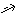
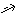
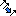
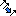
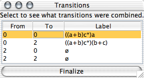
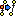
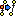

The FA is transformed so that there is a single final state that is not the initial state. First, the user creates a new final state. Then, the user inserts lambda transitions from the old final states to the new final state. This is accomplished with the regular state creator ( ) and transition creator () tools. The transition creator knows that if we are on this step, we will only be interested in creating lambda transitions. If there is already only a single final state, this step is skipped. The example does not require this step.
) and transition creator () tools. The transition creator knows that if we are on this step, we will only be interested in creating lambda transitions. If there is already only a single final state, this step is skipped. The example does not require this step.
 If there are multiple transitions from and to any two given states, they are combined into a single transition. For example, if from state qi to qj there are two transitions a and b, they are combined into the regular expression transition a+b. The user does this with the "Transition Collapser" tool (). To collapse multiple transitions between states, click one of these transitions while the tool is active. If there is no pair of states with multiple transitions between them, this step is skipped.
If there are multiple transitions from and to any two given states, they are combined into a single transition. For example, if from state qi to qj there are two transitions a and b, they are combined into the regular expression transition a+b. The user does this with the "Transition Collapser" tool (). To collapse multiple transitions between states, click one of these transitions while the tool is active. If there is no pair of states with multiple transitions between them, this step is skipped.
 Empty transitions are added between all pairs of states for which there is no transition; that is, if from qi to qj there is no transition, an empty transition is added from qi to qj. Note that empty transitions are not lambda transitions! To add empty transitions for this step, use the transition tool () as you normally do. Since this step assumes you will only be adding empty transitions, dragging out a transition will automatically create an empty transition. The example picture shows all the necessary empty transitions needed: note the empty set
Empty transitions are added between all pairs of states for which there is no transition; that is, if from qi to qj there is no transition, an empty transition is added from qi to qj. Note that empty transitions are not lambda transitions! To add empty transitions for this step, use the transition tool () as you normally do. Since this step assumes you will only be adding empty transitions, dragging out a transition will automatically create an empty transition. The example picture shows all the necessary empty transitions needed: note the empty set  symbol. If there is no pair of states without a transition between them, this step is skipped.
symbol. If there is no pair of states without a transition between them, this step is skipped.
  At this point, all non-initial, non-final states are collapsed, one at a time. To collapse a state, select the "State Collapser" tool () tool, and click on the state you wish to collapse. In the example, the only state to collapse is q1
At this point, all non-initial, non-final states are collapsed, one at a time. To collapse a state, select the "State Collapser" tool () tool, and click on the state you wish to collapse. In the example, the only state to collapse is q1
Once only the final and initial states remain, this generalized transition graph will yield a regular expression. One can use the "Export" button to put this expression into a regular expression environment.